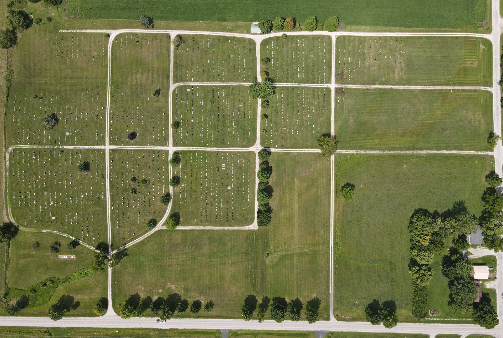

Lamoni Rose Hill Cemetery Map

grass
grass
grass
grass
grass
grass
Layout of Lots and Plat Notes
The west (older) half is divided into sections 1n, 1s, 2, 3n, 3s, 4, 5n, 5s, and 6. The east (newer) half is divided into blocks B3, B7, B8, B9 & B10 (the only ones for burials). These sections and blocks are collectively referred to as sections. To see the grid map for all lots CLICK HERE. Each lot has an X and Y coordinate relative to a section. X is the row of headstones starting with row 1 from west to east within a section. Y is the lot starting with 1 from north to south within a section (lots as plated). The term "row" by itself means X, because that is how the public would see a row. Each Y value represents a "horizontal row" of lots on the plat map or grid, but these plated rows are invisible to a visitor and probably should not call them rows to avoid confusions (or else qualify it with "horizontal rows" on the plat or grid). Without a plat map and measuring tape, Y is just a guide to help find the location.
The width of a lot is consistent across a horizontal line of lots on the grid (as plated). In the new east part of the cemetery most are 14' wide lots, made up of four 3.5' spaces. In the old west part of the cemetery most are 12' wide lots, made up of three 4' wide spaces (but prior to 1975 were viewed as four 3' wide spaces).
There are grassy lanes running horizontally through sections of the cemetery and are identified by a letter (lanes A through G) but most of these lanes are being sold off as burial plots. The 8' lanes were divided into 8' wide lots made up of two 4' wide spaces. There is one 6' lane on the east side that is divided into single 6' wide space lots.
There are some other exceptions to the lot sizes previously mentioned, all in the old west sections. The plat map shows that some of the horizontal rows of lots were plated for 5', 10', and 11' lot widths. A few lots have strange shapes along the curved roadways in sections 2 and 4. Section 6 was originally plated with very large 18.4' and 20.8' by 21' lots but in 1924 got re-plated so that most were 12' lots, but to do that some 10' horizontal lines of lots were needed. Furthermore, since some section 6 lots had already been sold they had to be worked around with some different size lots. One needs to look at the plat map to see these different measurements.